Robotic Manipulation by Imitating Generated Videos Without Physical Demonstrations
中文精读报告：RIGVid 试图回答一个很直接但很大胆的问题：机器人能否不看人类/机器人真实示范，只看一个由视频生成模型合成的任务视频，就在真实世界完成操作任务？
目录
1. 论文速览
| 论文要解决什么 | 传统从视频模仿的机器人方法依赖真实人类视频、机器人示范或离线机器人数据。RIGVid 要验证：只给初始 RGB-D 场景和语言命令，能否用一个生成视频作为唯一监督，让真实机器人执行倒水、抬盖、放锅铲、扫垃圾等操作任务。 |
|---|---|
| 作者的方法抓手 | 把“生成视频”转成“可执行的 6D object pose trajectory”。流程是：生成任务视频，VLM 过滤失败生成；估计每帧深度并与初始真实深度做尺度/偏移对齐；用 FoundationPose 跟踪主动物体 6D 位姿；抓取物体后把物体位姿轨迹重定向为末端执行器轨迹，并闭环跟踪恢复扰动。 |
| 最重要的结果 | 过滤后的 Kling v1.6 生成视频在四个真实任务上达到与真实人类视频相近的执行效果；RIGVid 平均成功率 85%，高于 ReKep 的 50%、Gen2Act 的 67.5%、AVDC 的 32.5%、4D-DPM 的 35.0% 和 Track2Act 的 7.5%。 |
| 阅读时要注意的点 | 结果成立的关键不是“视频生成模型直接懂机器人”，而是作者把生成视频压缩成物体级 SE(3) 轨迹，并用真实 RGB-D、物体 mesh、6D tracking、VLM 过滤和闭环执行补上了很多工程支撑。不要把这篇解读成纯 prompt-to-action，也不要忽略深度估计和 mesh 预建这两个主要瓶颈。 |
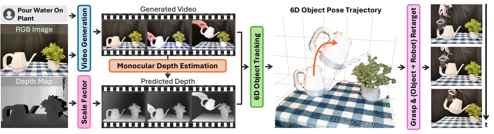
2. 背景与问题设定
核心问题
论文的核心问题可以写成：给定初始场景图像 \(I_0\)、初始深度 \(D_0\) 和语言命令 \(c\)，不用真实示范、不训练任务策略，直接预测机器人 6DoF 末端轨迹 \(\{\mathbf{T}^{WE}_t\}_{t=1}^T\)。作者选择的中间表示不是动作 token 或关键点约束，而是物体在世界坐标中的 6D 位姿轨迹 \(\{\mathbf{T}^{WO}_t\}_{t=1}^T\)。
这使问题从“生成机器人动作”转成“从生成视频里恢复物体如何运动”。这种转化很关键，因为当前视频生成模型能生成丰富的视觉时序，但并不输出可执行动作；而机器人执行更需要几何一致的轨迹。
和已有工作的差异
- 相对真实视频模仿：RIGVid 不需要在目标场景中采集人类示范视频，也不需要机器人 teleoperation。
- 相对离线视频学习：它不从大规模互联网视频里学泛化策略，而是为当前场景和当前命令生成一个定制视频。
- 相对 Gen2Act / Track2Act：它不用点轨迹作为最终几何表示，而是恢复完整物体 6D 位姿，因而在遮挡、旋转、深度变化下更稳。
- 相对 ReKep：ReKep 生成稀疏关键点关系约束，RIGVid 保留了视频中的连续视觉和时间细节。
3. 方法细节
3.1 生成视频与 VLM 过滤
输入为初始 RGB 图、对应深度和自由语言命令。作者使用图像到视频生成模型产生候选任务视频。由于生成视频可能不执行命令、改变物体、违反物理或静止不动，作者用 GPT-4o/o1 类 VLM 做自动过滤：从视频中均匀采样 4 帧，纵向拼接成 video summary，让 VLM 判断视频中是否有可见手完成给定动作。若失败则重新生成，最多尝试 5 次；若全部失败，使用最后一次生成。
3.2 深度估计与尺度对齐
生成视频只有 RGB，RIGVid 需要每帧深度来恢复 3D 位姿。作者用 monocular depth estimator 预测深度，但单目深度存在尺度和平移歧义。因此他们在第一帧主动物体区域内，用真实初始深度 \(D_0\) 对预测深度 \(\hat{D}^{mono}_0\) 拟合仿射变换：
$$D_t = a \hat{D}^{mono}_t + b$$
这个 \(a,b\) 在第一帧对齐后应用到整段视频。这个设计把真实 RGB-D 初始观测作为“尺度锚点”，否则生成视频中的三维运动无法落到真实机器人坐标中。
3.3 主动物体识别与 6D 位姿轨迹
系统需要知道“哪个物体被操作”。作者先让 GPT-4o 根据命令判断主动物体类别，再用 Grounding DINO 给出框，用 SAM-2 细化成 mask。之后用 FoundationPose 结合深度跟踪该物体的 6D pose trajectory。
FoundationPose 是 model-based tracker，需要物体 mesh。作者用 BundleSDF 预先采一个物体绕转的 RGB-D 短视频来重建 mesh。附录说明 BundleSDF 也能做 mesh-free joint reconstruction and tracking，但官方实现约 30 分钟处理一个视频，不适合实时闭环。
3.4 轨迹重定向到机器人
抓取由 AnyGrasp 完成。抓住物体后，作者假设末端执行器与物体之间的刚体变换保持不变。若 \(\mathbf{T}^{WO}_t\) 是物体在世界坐标中的位姿，\(\mathbf{T}^{EO}\) 是抓取后末端到物体的固定变换，则目标末端轨迹可理解为：
$$\mathbf{T}^{WE}_t = \mathbf{T}^{WO}_t(\mathbf{T}^{EO})^{-1}$$
具体坐标约定可能随实现不同而左右乘变化，但核心是不预测动作，而是用一个固定 grasp transform 把物体轨迹转成末端轨迹。这就是它能迁移到 ALOHA 或双臂设置的原因：换机器人时主要改末端到物体的变换。
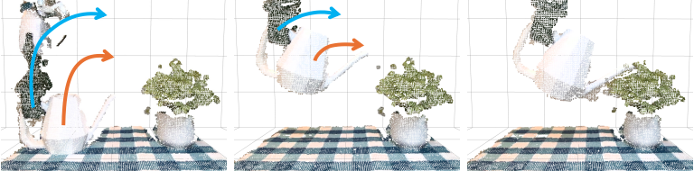
3.5 闭环执行与扰动恢复
执行时系统继续实时跟踪物体 6D pose。如果当前物体位姿偏离预计算轨迹超过 3 cm 或 20 度，机器人回退到上一个成功轨迹点再继续执行。这个闭环机制让 RIGVid 能处理人推机器人、抓取后滑移等现实扰动。
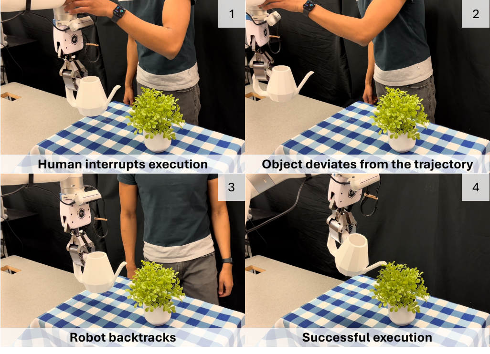
4. 实验与结果
4.1 任务设置
实验使用 xArm7 机械臂和固定 Orbbec Femto Bolt RGB-D 相机。四个主任务覆盖不同难点：倒水、抬锅盖、把锅铲放入锅中、把垃圾扫进簸箕。评价由人工根据任务成功标准判断，所有 baseline 使用同一批生成视频。
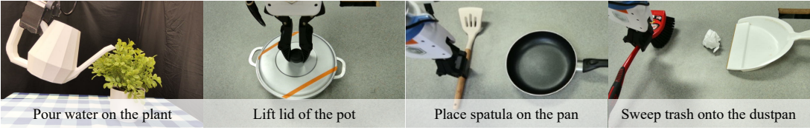
4.2 视频生成质量与过滤
| 视频源 | 作者观察 | 对机器人执行的影响 |
|---|---|---|
| Sora | 画面漂亮但常改变相机、物体大小、物体身份和场景布局；四个任务过滤通过率为 0%。 | 不适合直接模仿，未过滤执行成功率为 0%。 |
| Kling v1.5 | 更遵守语言和场景，但仍有物理不合理现象，例如水从壶顶部流出或动作没发生。 | 比 Sora 好，但任务越难越不稳定。 |
| Kling v1.6 | 命令遵循和物理合理性最好；过滤通过率为倒水 83%、抬盖 66%、放锅铲 55%、扫垃圾 45%。 | 经过 VLM 过滤后，生成视频可达到接近真实示范视频的效果。 |
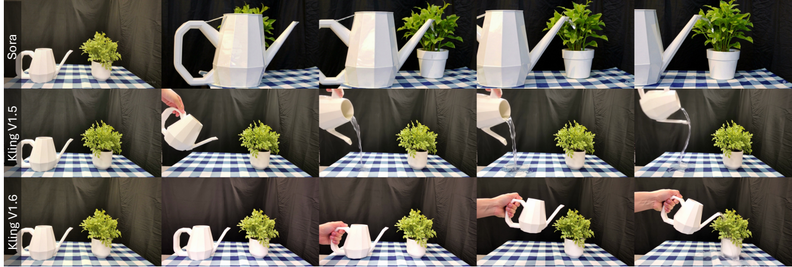
4.3 生成视频能否替代真实视频
作者比较未过滤 Sora、未过滤 Kling v1.5、未过滤 Kling v1.6、过滤后 Kling v1.6 和真实人类视频。过滤显著提高 Kling v1.6 的执行成功率：倒水从 80% 到 100%，抬盖从 60% 到 80%，放锅铲从 50% 到 90%，扫垃圾从 20% 到 70%。论文的关键结论是：在过滤后，当前强视频生成模型已经能作为有效的视觉示范源。
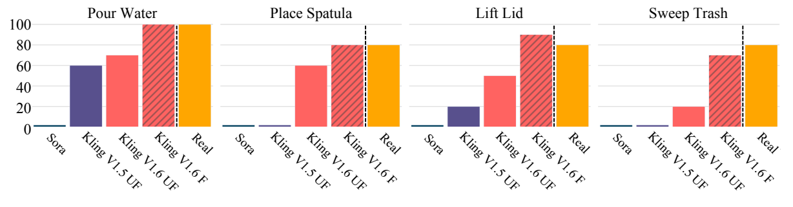
4.4 和 VLM 关键点/约束方法比较
ReKep 代表“让 VLM 直接生成较稀疏的关键点关系约束”的路线。RIGVid 平均成功率 85%，ReKep 为 50%。作者的解释是，视频虽然昂贵，但保留了任务过程中的连续视觉细节；ReKep 这类紧凑表示在抓取点、移动约束、倾倒约束等局部细节上容易出错。
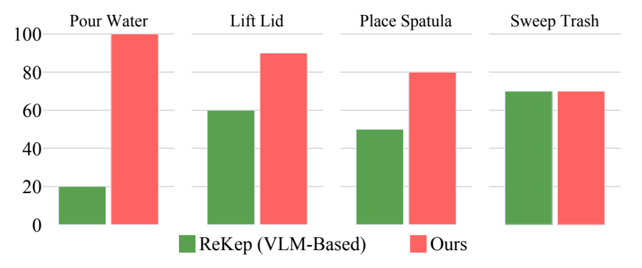
4.5 和轨迹提取 baseline 比较
| 方法 | 中间表示 | 平均成功率 | 主要失败模式 |
|---|---|---|---|
| Track2Act | 初始图与目标图之间的 2D point tracks | 7.5% | 轨迹预测不跟随真实物体运动，初末图不足以恢复完整过程。 |
| AVDC | 整段视频的 optical flow | 32.5% | 逐帧 flow 误差累积，导致物体位置漂移。 |
| 4D-DPM | 3D feature field / Gaussian field | 35.0% | 跟踪不稳定且抖动，尤其在单物体大旋转时。 |
| Gen2Act adapted | 生成视频上的 sparse tracks + PnP | 67.5% | 遮挡和大角度旋转导致可见点丢失，PnP 不稳定。 |
| RIGVid | FoundationPose 物体级 6D pose trajectory | 85.0% | 主要剩余失败来自单目深度估计和个别抓取滑移。 |
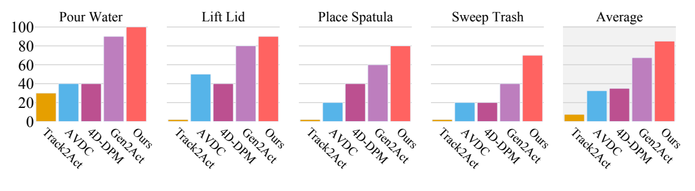
4.6 泛化与扩展
作者展示了三类泛化：第一，在 ALOHA 上做倒水达到 80% 成功率，而默认 xArm 设置为 100%，性能下降主要来自 ALOHA 相机标定更难；第二，双臂 ALOHA 能把一双鞋放入盒子；第三，扩展到擦拭、搅拌、熨烫、扶正番茄酱瓶、拔充电器、旋转勺子倒豆子等更多操作。这些结果更多是定性或 preliminary，但说明 object-centric retargeting 确实有跨 embodiment 潜力。
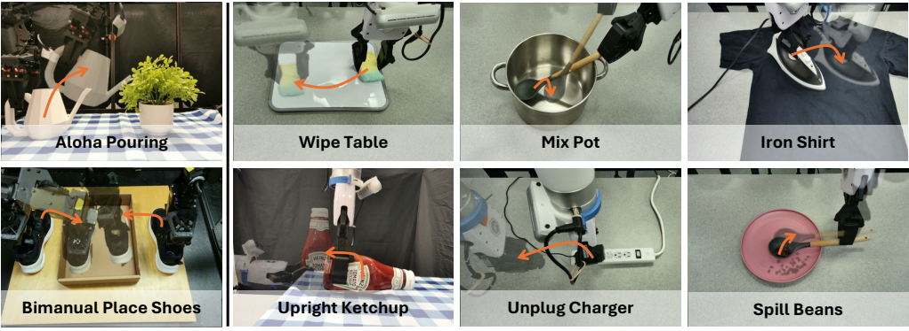
5. 附录关键信息
视频生成实践
附录总结了更可靠的视频生成条件：背景干净、干扰物少、物体足够大、视角接近人类自然视角、任务单一明确、prompt 简洁；使用 relevance factor 0.7，并加入 negative prompt “fast motion”。这些细节说明结果并非任意桌面场景都能直接成立。
过滤 prompt 与过滤指标
作者用 GPT o1/4o 对 4 帧拼接图判断视频是否完成命令。与 VBench++ 的 video-text consistency 和 I2V subject consistency 相比，VLM 过滤与人工判断的相关性最高：四个任务相关系数为 0.91、0.91、0.91、0.66，平均 0.84。VBench++ 指标只能粗略反映视频质量，不能可靠判断任务是否真的完成。
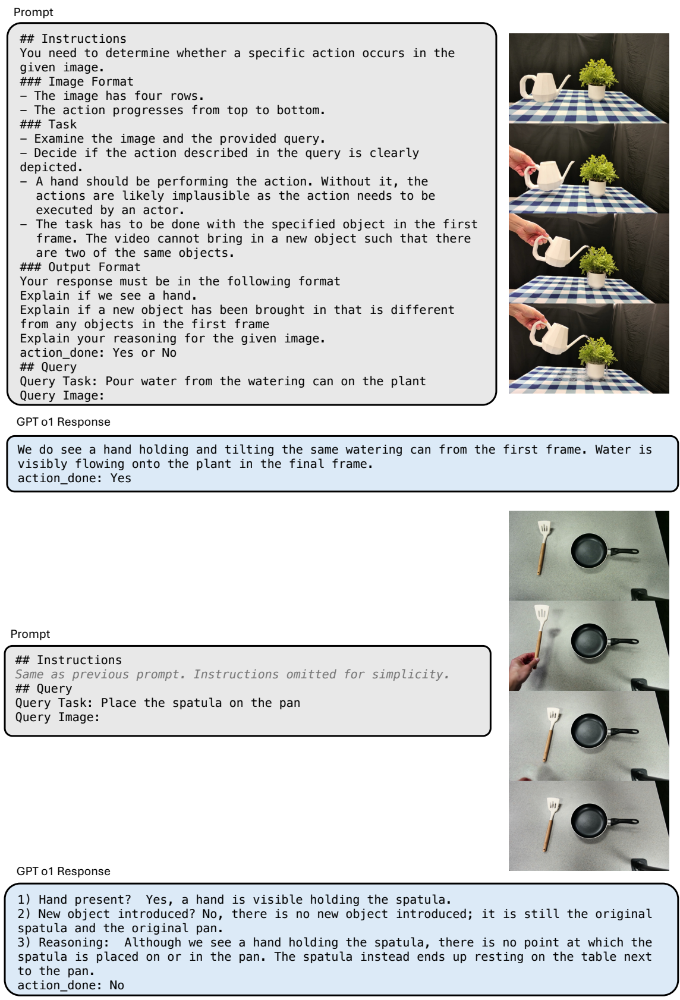
深度估计错误是主瓶颈
在 filtered Kling v1.6 视频上，除一个抓取滑移外，失败主要来自 monocular depth estimation。附录进一步隔离因素：真实视频 + 真实深度达到 100% 成功；真实视频 + 预测深度为 85%；Kling 生成视频 + 预测深度也为 85%。这说明生成视频本身不是唯一瓶颈，深度估计误差会直接污染 6D pose trajectory。
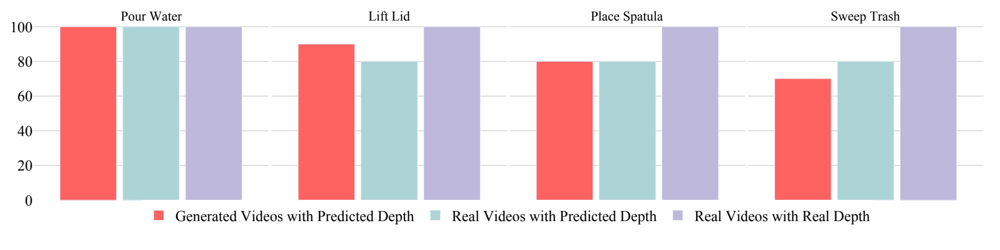
MegaPose vs FoundationPose
作者比较位姿轨迹抖动：MegaPose 平均平移 RMS jitter 为 0.0045 m，旋转 RMS jitter 为 37.47 度；FoundationPose 为 0.0029 m 和 14.31 度。FoundationPose 更平滑且能实时执行，因此成为主方法选择。
点轨迹方法为何失败
附录显示，Gen2Act 即使用 BootsTAP 或 CoTracker，遇到大旋转时可见表面点会被遮挡，2D-3D 对应不足，PnP 会漂移或跳变。RIGVid 依赖完整物体模型和 SE(3) 轨迹滤波，因此在大旋转、薄物体、遮挡场景中更稳定。
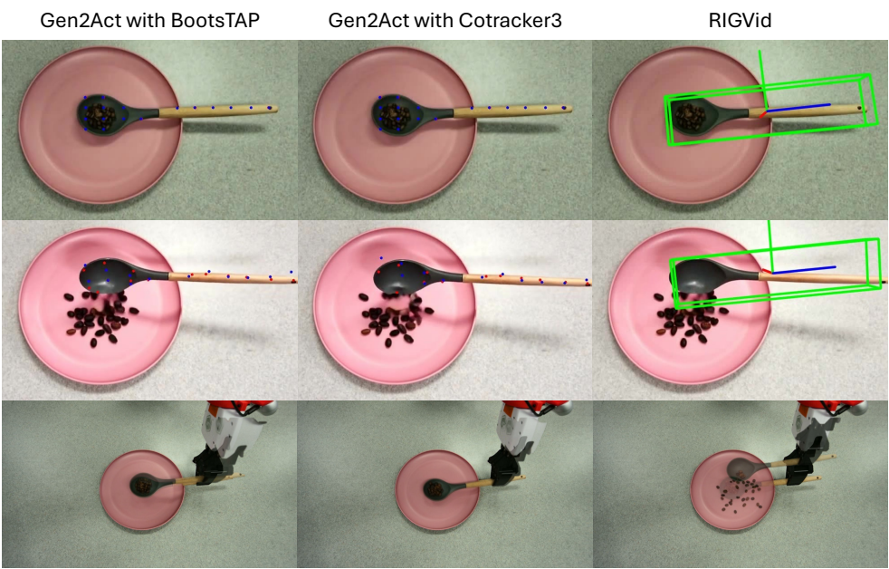
6. 复现与实现要点
输入与依赖
- 硬件：xArm7、固定 RGB-D 相机、可稳定标定的工作空间。
- 生成模型：论文比较 Sora、Kling v1.5、Kling v1.6，主结果依赖 Kling v1.6 加 VLM 过滤。
- 感知模块：GPT-4o/o1 过滤与主动物体识别、Grounding DINO、SAM-2、RollingDepth 类单目深度估计、FoundationPose、BundleSDF 预建 mesh、AnyGrasp。
- 控制模块：抓取后物体-末端固定变换、轨迹平滑、3 cm / 20 度偏差阈值触发回退恢复。
最小复现路径
- 固定任务场景，采集初始 RGB-D 图，并为主动物体预建 mesh。
- 用语言命令和初始图生成 5 个以内候选视频，VLM 过滤出成功视频。
- 对生成视频估计深度，并在第一帧主动物体 mask 内与真实深度做仿射对齐。
- 用 FoundationPose 估计每帧物体 6D pose，并做位姿平滑。
- AnyGrasp 抓取主动物体，记录抓取瞬间末端到物体的固定变换。
- 把物体轨迹重定向为末端轨迹，执行时实时跟踪物体并进行偏差恢复。
7. 分析、局限与边界
这篇论文最有价值的地方
它把“生成视频能不能当机器人监督”这个容易停留在概念层的问题，落到了真实机器人、真实任务和多组 baseline 上。最有价值的不是单独证明 Kling v1.6 好，而是证明了一条可执行分解：生成模型负责提供任务过程的视觉先验，VLM 负责筛掉明显失败样本，6D tracking 负责把视觉过程转成几何轨迹，闭环控制负责处理真实世界扰动。这条链路让生成式模型的视觉知识第一次比较扎实地接到了物理执行上。
结果为什么站得住
- 比较对象覆盖了多条路线：ReKep 的 VLM 关键点约束、Track2Act 的初末图点轨迹、AVDC 的 dense flow、4D-DPM 的 feature field、Gen2Act 的生成视频点轨迹。
- 所有 baseline 使用相同生成视频，减少了“视频源不同”导致的偏差。
- 论文不只报最终成功率，还分析了视频质量、过滤准确性、深度估计、点轨迹遮挡、FoundationPose vs MegaPose 的轨迹抖动。
- 主失败模式和附录分析一致：当 filtered video 已经合理时，剩余问题主要来自单目深度与跟踪，而不是一句空泛的“生成模型不够好”。
主要局限
- 需要物体 mesh：FoundationPose 的主流程依赖预建物体模型，限制了完全开放世界部署。
- 依赖高质量视频生成与过滤：Sora 在本文设置中完全不可用；Kling v1.6 也需要多次生成和 VLM 过滤。
- 单目深度是硬瓶颈：预测深度的尺度误差和时间 flickering 会直接导致轨迹错误。
- 任务仍偏 tabletop、单主动物体：多物体长期交互、柔性物体、强接触力控制、需要手指重抓取的任务尚未被充分验证。
- 成本较高：视频生成、VLM 过滤、mesh 预建、6D tracking 组合起来并不轻量。
- 评估规模有限：四个主任务、每源每任务 10 个视频，足以支持论文主张，但离大规模通用机器人操作还很远。
读组会时可追问的问题
- 如果没有真实初始深度，只靠生成视频和单目深度，轨迹尺度能否稳定？
- VLM 过滤主要是 false negative，那么重试 5 次的计算成本和延迟是否可接受？
- FoundationPose 的 mesh 预建是否会成为比真实示范更麻烦的新数据采集步骤？
- 当前任务成功标准多为终态几何满足，若任务涉及力、接触顺序或材料变化，生成视频监督是否还足够？
- 如果未来视频生成模型能直接输出深度/3D/4D scene，RIGVid 的哪些模块会被替换，哪些思想会保留？